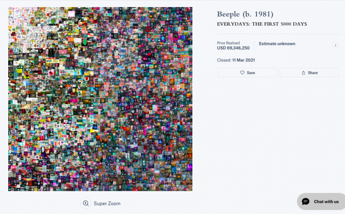

NFT - это?
NFT - это сертификат, доказывающий, что вы владеете уникальным объектом в цифровом пространстве. Но этот сертификат не бумажный, а криптографический. Он позволяет, после покупки на бирже, строчками кода записать в блокчейне право на владение каким-то активом.

Где хранить NFT?
Верным решением для хранения NFT будет выбор некастодиального криптокошелька (где приватные ключи находятся только у пользователя) с максимальной поддержкой сетей.
Сколько стоит сделать NFT?
Размер комиссии OpenSea на январь 2022 г. составляет 2,5% или около 200 USD (0.05 ETH) для выставления NFT на продажу. Второй вариант – заплатить минимальную цену газа в размере 0,02 ETH (80 USD) для инициализации вашего кошелька в OpenSea, после чего комиссия не взимается. Создатель токена оплачивает газ транзакции только при первом размещении.

Как получить NFT?
Один из основных способов получения NFT — создание собственного токена на крупнейшем маркетплейсе OpenSea. Для этого необходимо иметь криптовалютный кошелек, например, MetaMask, а также картинку, видео, аудио или любой другой файл, который необходимо обернуть в NFT.
Как получить галочку на OpenSea?
1) Быть активным. Вы должны были купить или продать хотя бы один NFT за последние три месяца.
2) Настройте изображение профиля, адрес электронной почты и баннер.
3) Не иметь предыдущих ограничений за нарушение условий обслуживания OpenSea.
NFT и игры
Play to Earn – концепт, который позволяет зарабатывать деньги, играя в компьютерные, или мобильные игры. В криптоиграх это чаще всего нативная криптовалюта и игровые предметы. Криптовалюту можно обменивать на криптобирже (например, Binance), а игровые предметы – продавать на специальных маркетплейсах.
Pay to Win – ещё один концепт. Он означает, что в игре есть возможность задонатить и получить преимущества перед другими игроками. Например, купить крутое оборудование, оружие, или внутреннюю валюту.